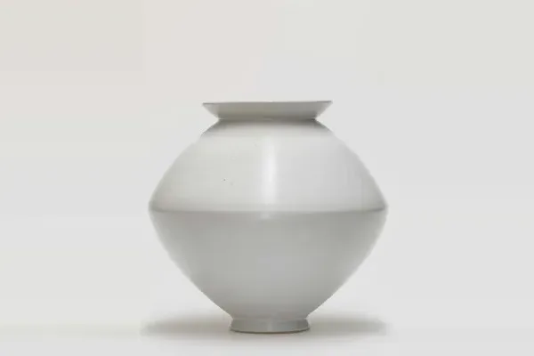
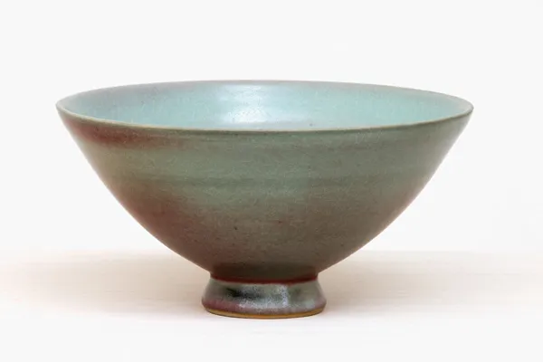
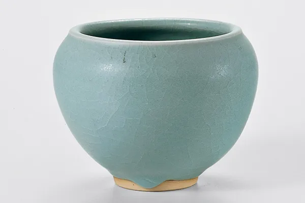
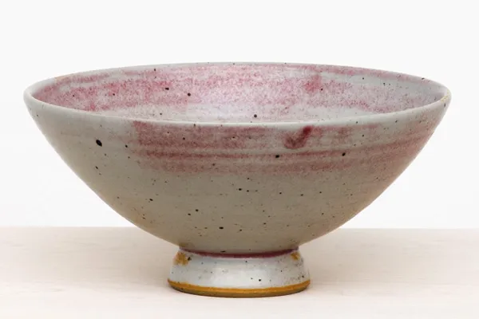
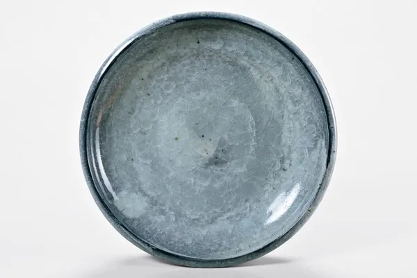
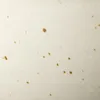
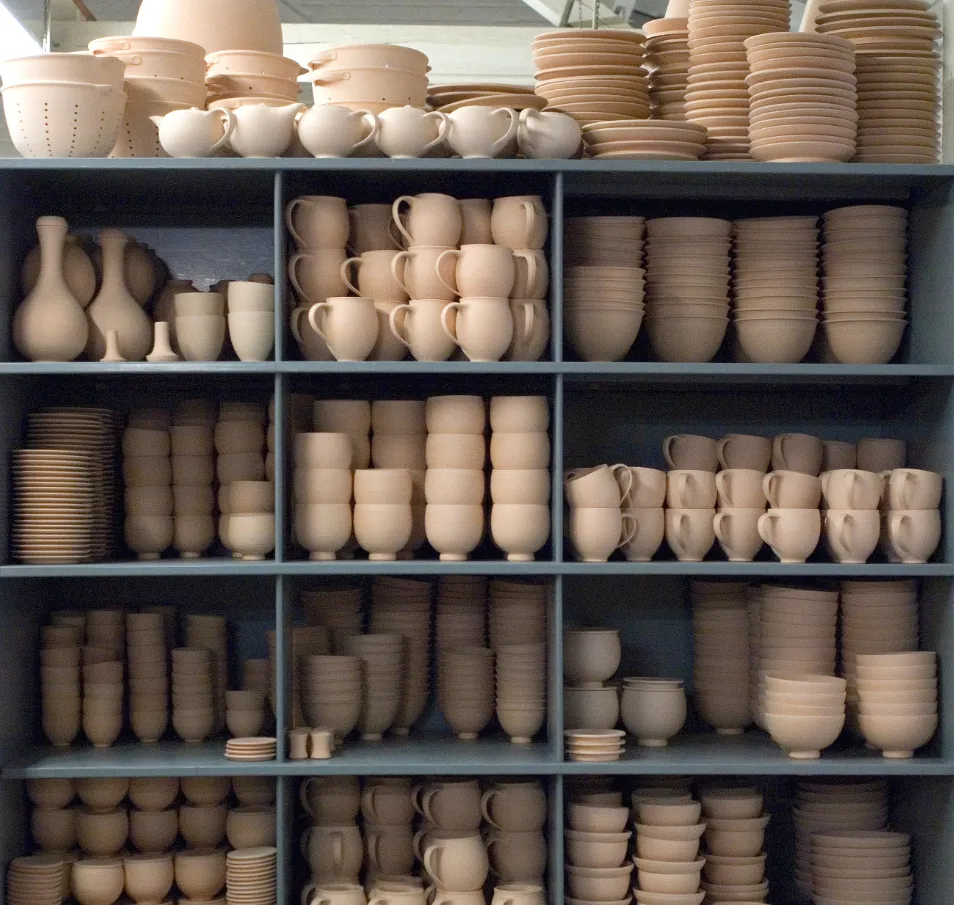

Jetzt zu sehen
99 Schalen – ein Kosmos
23. April – 25. Oktober 2026
Museum für Ostasiatische Kunst, Köln
„Schalen über Schalen, einfach auf den Boden gestellt. Ein Meer aus Schalen, ein Feld aus Kelchen, ein Ring aus Teilchen um eine leere Mitte, eine kleine Milchstraße voll schimmernder Gefäße.“
Außerdem
- Läuft 16. August – 31. Oktober 2026 „Kummerschalen“ Willibrordi-Dom, Wesel
- Demnächst 3. Oktober – 12. Dezember 2026 Kathleen Jacobs / Young-Jae Lee Galerie Karsten Greve, St. Moritz
- Demnächst 6.–8. November 2026 Mode, Taschen, Keramik & Licht im Dialog Pop-up in der Werkstatt, Zeche Zollverein
Die Werkstatt
„Immer sind es Schalen, und doch ist keine wie die andere.“
Gedrehte Gefäße und Gebrauchsgeschirr aus Essen, seit 1924. 1927 kam die Werkstatt über Johannes Leßmann, einen Schüler Otto Lindigs, zum Bauhaus. Heute arbeitet sie auf dem Gelände der Zeche Zollverein.
Meisterstücke
Von ihr selbst gedreht, bemalt und glasiert.
Feldspatglasuren, zum Teil mit Asche versetzt. Gebrannt im Gasofen bei etwa 1300 °C oder im Holzofen, wo sich reichere Tönungen und oft nicht zu steuernde Verfärbungen ergeben.

SpindelvasePetalit-Eichenasche-Feldspat-Glasur · Holzofen · 2006/07 KummePetalit-Eichenasche-Glasur · Holzofen · Essen 1995
KummePetalit-Eichenasche-Glasur · Holzofen · Essen 1995
Schale, spitzStrontium-Feldspat-Glasur · 2003–2005 KugelvaseBarium-Feldspat-Glasur · Holzofen · Essen 1996
KugelvaseBarium-Feldspat-Glasur · Holzofen · Essen 1996
BettelmönchschaleBarium-Feldspat-Glasur · Gasofen · Essen 1988 ZylindervasenPetalit-Eichenasche-Glasur · Holzofen · Essen 2003
ZylindervasenPetalit-Eichenasche-Glasur · Holzofen · Essen 2003
Schale, spitz, großPetalit-Eichenasche-Glasur · 2003–2005
Große SchaleWollastonit-Feldspat-Glasur · Gasofen · Essen 1994
Keramikerin
Young‑Jae Lee
Geboren 1951 in Seoul, ausgebildet in Seoul und Wiesbaden, seit den achtziger Jahren in Essen. Ihre Gefäße stehen in Museen von Boston bis Jerusalem.

„Die minimale Veränderung ist Young-Jae Lees unbegrenzter Freiraum – in der Form wie in der Farbigkeit der Glasur und der Bemalung.“
Östlich gedreht, westlich abgedreht
Zwei Arbeitsgänge, zwei Traditionen. Beim Drehen zieht Young-Jae Lee das Gefäß nach östlicher Weise aus dem Ton hoch, die Scheibe läuft gegen den Uhrzeigersinn. Ist der Ton lederhart, steht das Gefäß kopfüber, und sie dreht es nach westlicher Weise ab: Im Uhrzeigersinn trägt das Dreheisen den Ton spanweise ab, bis Wand und Fuß stimmen.
Wie ein Stück entstehtManufaktur
Keiner Mode, keinem Zeitgeist unterworfen.
Unter Rückbesinnung auf die Grundprinzipien des Bauhauses entwickelte Young-Jae Lee mit Hildegard Eggemann, Michael Schmandt und Claudia Neumann die Formensprache des Programms: zuerst 25 Grundelemente eines Geschirrs, Teller, Schalen, Krüge.

weiß hellgrün matt
hellgrün matt- hellgrün glänzend
- dunkelgrün glänzend
- dunkelgrün matt
 rostbraun
rostbraun

„Jedes Stück muss gut zu drehen sein und auch zu benutzen. Alle Teile eines Geschirrs, gleich welcher Farbe, sollten miteinander kombinierbar sein.“
- Masse
- Westerwälder Steinzeug, auf der Töpferscheibe gedreht
- Brand
- Schrühbrand im Elektroofen bei etwa 950 °C, Glasurbrand im Gasofen bei etwa 1300 °C
- Programm
- Vom Teller bis zum Krug, dazu die Edition mit Vasen, Pflanzgefäßen und Dosen
- Gebrauch
- Alle Stücke sind spülmaschinenfest
Werkstatt
Hundert Jahre an der Scheibe.
1924 auf Initiative von Margarete Krupp für die Siedlung Margaretenhöhe gegründet, seit 1927 den Formprinzipien des Bauhauses verpflichtet.

- 1924
Margarete Krupp realisiert die Siedlung Margaretenhöhe. Hermann Kätelhön initiiert eine Keramikwerkstatt, Leiter wird Will Lammert.
- 1927
Johannes Leßmann, Schüler des Bauhaus-Keramikers Otto Lindig, stellt auf Serienkeramik um.
- 1933
Umzug in ein Gebäude der Zeche Zollverein.
- 1944
Walburga Külz, ebenfalls Schülerin Otto Lindigs, übernimmt die Leitung.
- 1953
Helmut Gniesmer stellt das Programm vorwiegend auf Baukeramik um.
- 1986
Young-Jae Lee und Hildegard Eggemann übernehmen die Leitung und nehmen das Manufakturprogramm wieder auf.
- 1987
Umzug in das Baulager der Zeche Zollverein, heute Weltkulturerbe.
- 2006
Young-Jae Lee übernimmt die Werkstatt von der RAG und führt sie als Geschäftsführerin.
Besuch
Die Werkstatt ist offen.
Sie möchten ein Stück sehen oder ein Geschirr zusammenstellen? Schreiben Sie uns, wir schicken Ihnen gern weitere Informationen. Oder Sie kommen vorbei.
- Geöffnet
- Montag bis Freitag 9–17 Uhr
Samstag 11–15 Uhr
sonst nach Vereinbarung - Adresse
- Bullmannaue 19, 45327 Essen
auf dem Gelände der Zeche Zollverein